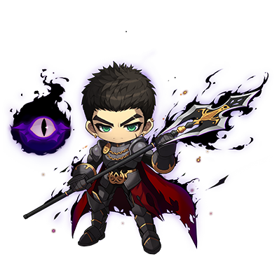

Spearman คืออะไร

เปิดทางด้วยปลายหอก ยืนรับศัตรูที่เข้ามา แล้วกวาดให้พ้นทาง
Spearman คือ นักรบสายหอก / Polearm ใน MapleStory Classic World เริ่มจาก Warrior ที่ Lv.10 แล้วเลือกสายที่ Lv.30 ไกด์นี้พาเล่นตั้งแต่ Maple Island ไปจนถึง Lv.50 พร้อมแผน SP ที่มองไปถึง Lv.70
เดินรับเควสที่นับมอนร่วมกัน เก็บของล่วงหน้า และส่งงานให้ครบในรอบเดียว เพื่อลดการกลับไปตีมอนและเดินแมพซ้ำ ช่วงที่ไม่มีเควสคุ้มให้เลือกแมพที่ตีโดนและฆ่าไว แทนฝืนมอนที่เลเวลสูงกว่า
ก่อนเริ่ม: Warrior ต้องเข้าระยะประชิดและมีค่า Accuracy ที่ต้องดูแล เก็บเงินสำรองยาไว้ก่อนลงทุนซื้อชุดใหม่ ถ้าฟาร์มแล้วเงินลด ให้แก้จำนวนครั้งที่ตีพลาดและค่ายาก่อน